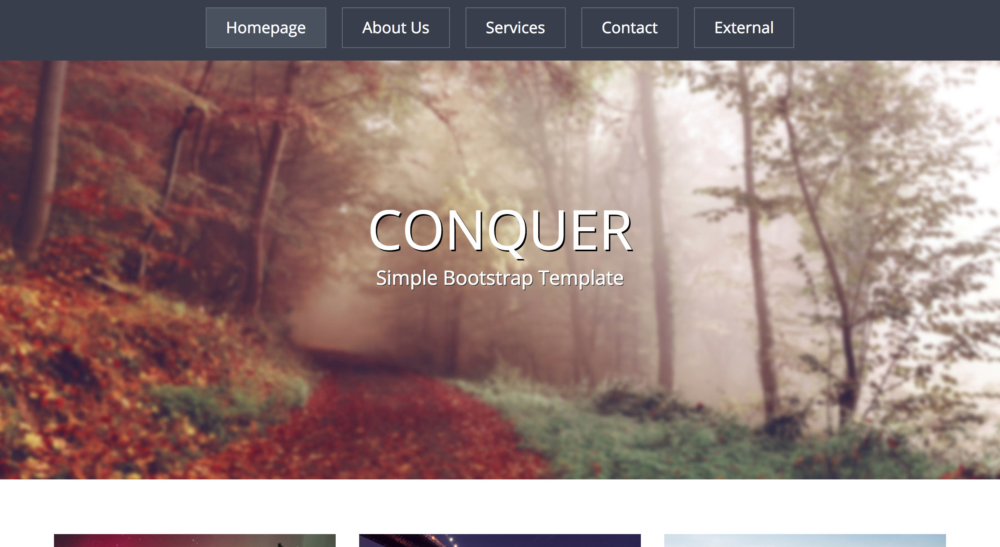
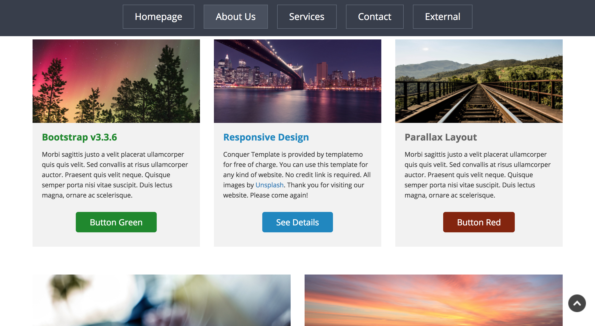
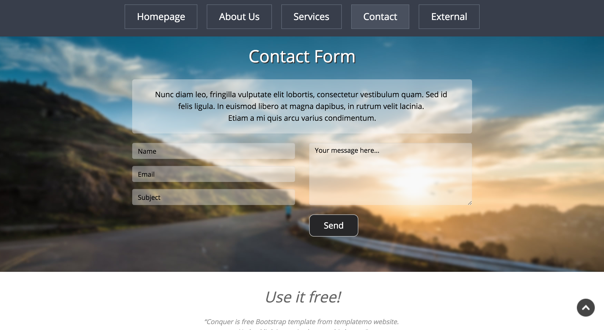

<div id="ajax-page" class="ajax-page-content">
    <div class="ajax-page-wrapper">
        <div class="ajax-page-nav">
            <div class="nav-item ajax-page-prev-next">

                <a class="ajax-page-load" href="portfolio-2.html">
                    <i class="zmdi zmdi-chevron-right"></i>
                </a>
            </div>
            <div class="nav-item ajax-page-close-button">
                <a id="ajax-page-close-button">
                    <i class="zmdi zmdi-close"></i>
                </a>
            </div>
        </div>

        <div class="ajax-page-title">
            <h1>Conquer Template</h1>
        </div>

        <div class="row">
            <div class="col-sm-7 col-md-7 portfolio-block">
                <div class="owl-carousel portfolio-page-carousel">
                    <div class="item">
                        
                    </div>
                    <div class="item">
                        
                    </div>
                    <div class="item">
                        
                    </div>
                    <div class="item">
                        
                    </div>
                </div>


                <!--
                <div class="portfolio-page-image">
                    
                </div>
                -->

                <script type="text/javascript">
                    jQuery(document).ready(function ($) {

                        $('.portfolio-page-carousel').owlCarousel({
                            smartSpeed: 1200,
                            items: 1,
                            loop: true,
                            dots: true,
                            nav: true,
                            navText: false,
                            margin: 10
                        });

                    });
                </script>
            </div>

            <div class="col-sm-5 col-md-5 portfolio-block">
                <!-- Project Description -->
                <ul class="project-general-info">
                    <li>
                        <p>
                            <i class="fa fa-globe"></i>
                            <a href="http://martinbryant.dev/conquer/conquer-using-grid/" target="_blank">Conquer using
                                CSS Grid</a>
                        </p>
                    </li>
                    <li>
                        <p>
                            <i class="fa fa-github"></i>
                            <a href="https://github.com/martinbryant/conquer-theme-using-grid" target="_blank">Github
                                Repo</a>
                        </p>
                    </li>
                    <li>
                        <p>
                            <i class="fa fa-globe"></i>
                            <a href="http://martinbryant.dev/conquer/conquer-original/" target="_blank">Conquer original
                                version</a>
                        </p>
                    </li>
                    <li>
                        <p>
                            <i class="fa fa-calendar"></i> 18 February 2018
                        </p>
                    </li>
                </ul>

                <h3>Project Brief</h3>
                <p class="text-justify">Inspired by
                    <a href="https://medium.com/@GarrettLevine/5-projects-to-complete-when-starting-to-learn-front-end-web-development-48e8a1ce3178#15f5"
                        target="_blank">5 Projects To Complete When Starting to Learn Front-End Web Development</a>
                </p>

                <p class="text-justify">The Conquer template is a really great starting place for new learners. They
                    have the opportunity to build
                    something they can feel proud of while still being challenged. The Conquer template utilizes
                    bootstrap,
                    but it is important to avoid using this to build the project</p>

                <h3>Challenges</h3>
                <ul>

                    <li>Using sections in the navbar to scroll down the page</li>
                    <li>Scrolling over 3 images</li>
                    <li>Collapsing the navbar on smaller screens</li>
                    <li>Stacking the sections correctly on smaller screens</li>
                </ul>
                <h3>Takeaways</h3>
                <ul>
                    <li>Learnt about CSS selector specificity rules</li>
                    <li>Used the new CSS Grid to achieve responsive layout</li>
                </ul>


                <!-- /Project Description -->

                <!-- Technology -->
                <div class="tags-block">
                    <div class="block-title">
                        <h3>Technology</h3>
                    </div>
                    <ul class="tags">
                        <li>
                            <a>HTML</a>
                        </li>
                        <li>
                            <a>CSS</a>
                        </li>
                        <li>
                            <a>Javascript</a>
                        </li>
                        <li>
                            <a>jQuery</a>
                        </li>
                    </ul>
                </div>
                <!-- /Technology -->

            </div>
        </div>
    </div>
</div>